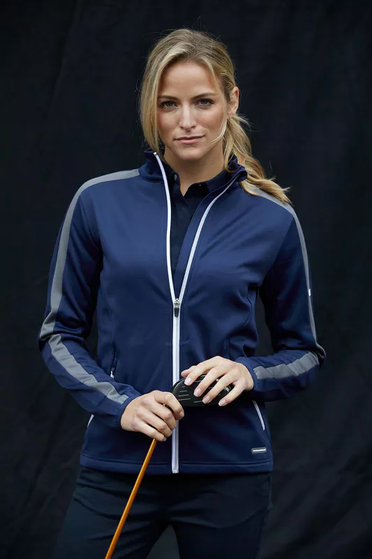

Som företagare är du medveten om hur viktigt det är att ge en så
bra bild som möjligt. Det är viktigt att klä sig väl och ge en
professionell bild när du träffar kunder, presenterar nya idéer
eller deltar i viktiga evenemang.
Men vilka är fördelarna med att klä sig affärsmässigt? Vad ska du
ha på dig när du träffar kunder eller när du deltar i ett
evenemang?
I det här inlägget kommer vi att diskutera hur du kan få ut det
mesta av dina affärs- och profilkläder, och vi kommer också att ge
dig några råd om hur du kan klä dig på lämpligt sätt för de olika
typer av sammankomster och evenemang som du kan komma att delta i.
Klä dig för framgång och vikten av att göra ett gott första
intryck
Det är viktigt att både du och dina anställda klär er på
lämpligt sätt när ni driver ett företag. Du vill se
professionell och välklädd ut inför potentiella klienter och
kunder så att du kan göra ett positivt första intryck på dem.
På grund av detta är det en smart idé att göra en investering i
högkvalitativa, lågprofilerade kläder. Det kommer inte bara att
få dig och dina anställda att verka mer professionella, utan det
kommer också att ingjuta den självtillit som är nödvändig för
att uppnå dina mål. Om du är på marknaden för nya kläder till
ditt företag bör du följaktligen göra det till en punkt att
undersöka det urval av profilkläder som erbjuds i den klädbutik
som ligger närmast dig. Du kommer definitivt att hitta något som
uppfyller både dina krav och dina ekonomiska begränsningar.
Betydelsen av formell klädsel för att ge en professionell image
Det är viktigt att upprätthålla en professionell attityd när man
ansvarar för att driva ett företag. Detta innebär att du måste
klä dig lämpligt för den miljö du befinner dig i och klä dig på
lämpligt sätt.
Din arbetslinje kommer i hög grad att påverka vilka typer av
kläder som är lämpliga för dig att bära, men det finns några
allmänna rekommendationer som du bör ha i åtanke. En kostym är
nästan alltid ett bra val när man klär en man. Dessutom bör du
alltid bära skjorta och slips vid formella evenemang. För
kvinnor är några lämpliga alternativ en kavaj, klädbyxor eller
en kjol och en blus.
Tänk på att när de är ute i samhället representerar dina
anställda ditt företag, så det är viktigt att behandla dem som
sådana. Därför måste du se till att de har lämplig klädsel.
Fördelarna med att bära uniformer med märkning
Det finns några fördelar som sticker ut när det gäller
arbetskläder och profilkläder, bland annat följande:
1. Till att börja med utstrålar anställda som bär uniformer en
känsla av större professionalism. Detta beror på att alla är
klädda på samma sätt, vilket på ett mycket tydligt sätt
förmedlar till kunderna att alla arbetar tillsammans som ett
team. Detta kan bidra till att utveckla en känsla av tillit och
samhörighet mellan konsumenten och företaget.
2. För det andra är det ett utmärkt sätt att visa sitt stöd för
laget genom att bära uniform. Det är lättare för de anställda
att känna att de arbetar tillsammans mot ett gemensamt mål när
alla i företaget bär samma kläder. Detta har potential att
förbättra moralen och uppmuntra till samarbetsbeteende.
3. Sist men inte minst kan det vara ett effektivt och
kostnadsbesparande sätt att klä de anställda med uniformer. Du
behöver inte oroa dig för att spendera en massa pengar på att
köpa unika plagg för varje individ, eftersom detta inte kommer
att vara nödvändigt. Istället kan du investera i ett litet antal
uniformer som alla kan använda i utbyte mot varandra.
Skillnaden mellan en businesskostym och en mer avslappnad klädsel
Även om en mer avslappnad klädstil är idealisk för vardagligt
bruk är det inte alltid det lämpligaste alternativet för
professionella sammanhang.
Det finns ett antal viktiga skillnader mellan affärskostym och
avslappnad klädsel, och dessa skillnader kan användas för att
avgöra kvaliteten på din professionella image.
- Till att börja med är kläder som är lämpliga för en
affärsmiljö vanligtvis mer konservativa och formella. Du bör
undvika starka färger och mönster och i stället hålla dig till
neutrala nyanser som svart, marinblått och beige.
- För det andra är vardagskläder vanligtvis mer bekväma,
medan affärskläder är konstruerade för att se eleganta ut
samtidigt som de ger en bild av kompetens. Detta innebär att
blazrar, kostymer och skjortor bör ha en bra passform och vara
tillverkade av högkvalitativa material.
- Sist men inte minst är fritidskläder, i jämförelse med
affärskläder, vanligtvis mer avslappnade och sociala. När du
träffar kunder eller kollegor innebär detta att du kan bära
jeans eller khakis med en skjorta, men du bör undvika att bära
tank tops eller shorts.
Hur du väljer den lämpligaste klädseln för att bedriva
affärsverksamhet i din organisation
Det finns några saker du måste tänka på när det gäller att välja
lämplig affärsklädsel för din organisation. Se till att kläderna
du bär är lämpliga för den bransch du arbetar inom, eftersom
detta är det enskilt viktigaste. Om du till exempel driver en
advokatbyrå vill du se till att dina anställda bär kostym och
kjol. Om du däremot driver ett företag som säljer
hårdvarutillbehör kan du överväga att låta dina anställda bära
mer avslappnade kläder, till exempel jeans och T-shirts.
Kulturen på din arbetsplats är ännu en viktig aspekt att ta
hänsyn till. Det är bäst att upprätthålla en kultur som är
formell eller professionell, eftersom detta kommer att diktera
att du bär traditionell affärsklädsel. Om din arbetsplats å
andra sidan är mer avslappnad eller kreativ kan du kanske komma
undan med att bära kläder som är lite mer riskfyllda.
Det är du som arbetsgivare som i slutändan är ansvarig för att
avgöra vilka aspekter av en policy som är lämpliga för ditt
företag. Oavsett vad du beslutar bör du dock se till att dina
anställda är nöjda med och trygga i de kläder de väljer att
bära. De kommer trots allt att tala på din organisations vägnar!
Råd om hur man klär sig för att lyckas i affärsvärlden
När det gäller att sätta ihop en outfit som hjälper dig att nå
dina mål finns det några viktiga punkter att tänka på. Dina
kläder ska vara fläckfria, nypressade och skräddarsydda så att
de passar dig ordentligt först och främst. Du bör också undvika
att bära en överdriven mängd smink eller smycken eftersom det
kan vara mycket distraherande att göra det.
Om du inte är säker på vad du ska ha på dig till den kommande
presentationen eller det kommande mötet som du har, försök att
behålla ett rakt och affärsmässigt utseende. Det är omöjligt att
se dåligt ut i en enkel kombination av jacka, krage och byxor i
en neutral färg. Du kan också prova en skjorta eller klänning
med ett livligt tryck eller en livlig färg om du letar efter
något som är lite mer i linje med dagens modetrender.
Tänk först och främst på hur viktigt det är att känna sig bekväm
i de kläder du bär. Stressa inte över att ta på dig en kostym om
du bara inte kan få dig själv att göra det! Du har en mängd
andra möjligheter som står till buds i yrkeslivet. Se bara till
att det du väljer är rent och välskött innan du binder dig till
det.

Några avslutande tankar om hur man klär sig lämpligt på jobbet
När det gäller din professionella garderob är det absolut
nödvändigt att du klär dig för det jobb du vill ha, snarare än
för det jobb du redan har. Du kan visa dina medarbetare och
kunder att du är engagerad i din karriär och tar ditt arbete på
allvar om du klär dig på ett sätt som är professionellt och väl
sammansatt.
Att bära profilkläder gör inte bara att du ser bättre ut, utan
har också potential att öka ditt självförtroende och förbättra
din förmåga att prestera bra under press. Om du vill avancera
ytterligare i din karriär är därför det första steget du bör ta
att skaffa dig en högkvalitativ affärsklädsel.